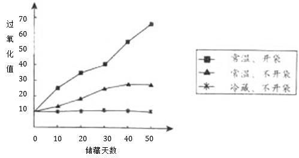

2016年北京市中考化学真题 · 科普阅读 第30题
30．（5分）阅读下面科普短文（原文作者：渊琳、孙小凡等，原文有删改）。
方便面是很受欢迎的 速食品，关于它的传闻有很多。
速食品，关于它的传闻有很多。
传闻1：方便面含盐超标
某方便面的营养成分 |
项目 每100g |
能量 2013kJ[ 蛋白质 9.9g 脂肪 24.4g 碳水化合物 55.4g 钠 2054mg |
我们知道，常人每天摄入食盐量不宜超过6g，长期过多摄入可能引发高血压、胃溃疡等疾病。经检测，每包方便面评价含食盐约3g。
传闻2：方便面的面饼五分之一以上都是油
专家建议常人每天摄入油量不宜超过25g，长期高油脂摄入会导致高脂血症等疾病。研究人员将90g油炸型方便面面饼研碎，在加热条件下，用乙醚（C2H5OC2H5）作溶剂浸泡、提取、分离，得到的油约20g。
传闻3：吃方便面胃里面会形成一层蜡模
有传闻称碗装方便面的面碗内有一层蜡，会随食物进入人体产生危害。事实上，面碗内的耐热防水材料是聚苯乙烯，不是蜡。泡面时，聚苯乙烯的释放量远低于每天每千克体重0.04mg的安全摄入量。
传闻4：吃一包方便面要解毒32天
人们担心面饼中食品添加剂BHT（油脂抗氧化剂）危害健康。BHT每天的最大可摄入量为每千克体重0.3mg。我国相关标准规定，食品中每千克油脂中BHT的添加量不超过0.2g。因此，就算每天吃5包方便面，摄入的BHT也不会超标。
传闻5：面饼不会变质
事实上，面饼中的油会发生酸败而变质，产生“哈喇味”。过氧化物是酸败过程的一种中间产物，会加速面饼的变质。下图是不同条件下，某品牌方便面中过氧化值（与过氧化物含量成正比）的测定结果。

用不同品牌的方便面进行测定，变化规律类似。
看完上面关于传闻的解读，相信你对如何健康食用方便面已有心得。
依据文章内容回答下列问题。
（1）常人每天摄入食盐量不宜超过 g。
（2）测定面饼中油含量的操作包括 （填序号，下同）。
A．将面饼研碎 B．用乙醚浸泡 C．加热
（3）判断传闻3的真假并说明理由： 。
（4）方便面不开袋时，影响其过氧化值的因素有 。
（5）下列关于方便面的说法正确的是 。
A．不能添加食品添加剂 B．食用时，调料包应酌量添加
C．包装袋破损会缩短保质期 D．食用时，尽量搭配蔬菜
【生产实际分析】